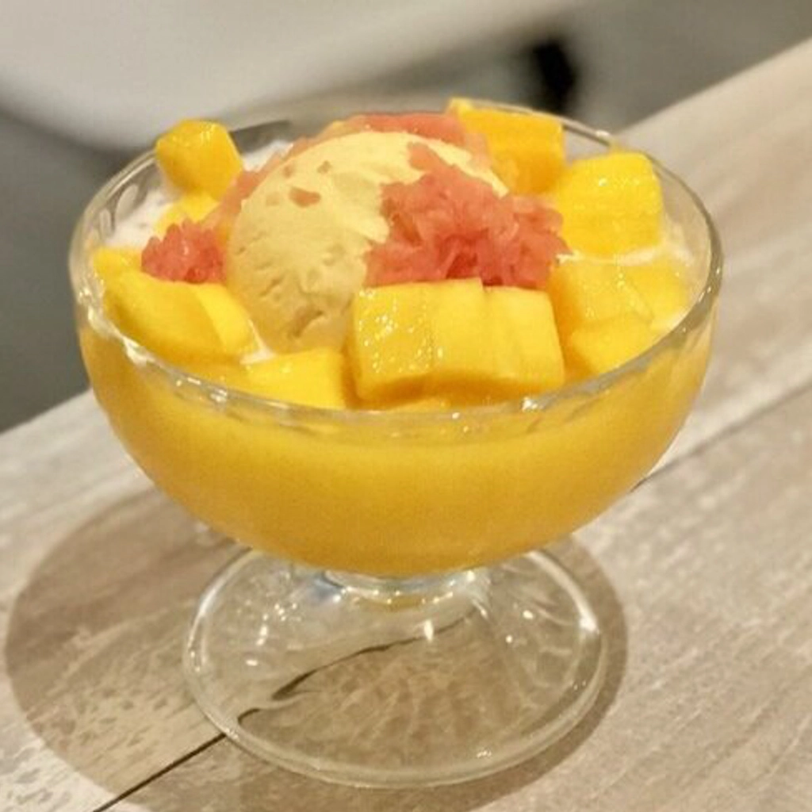
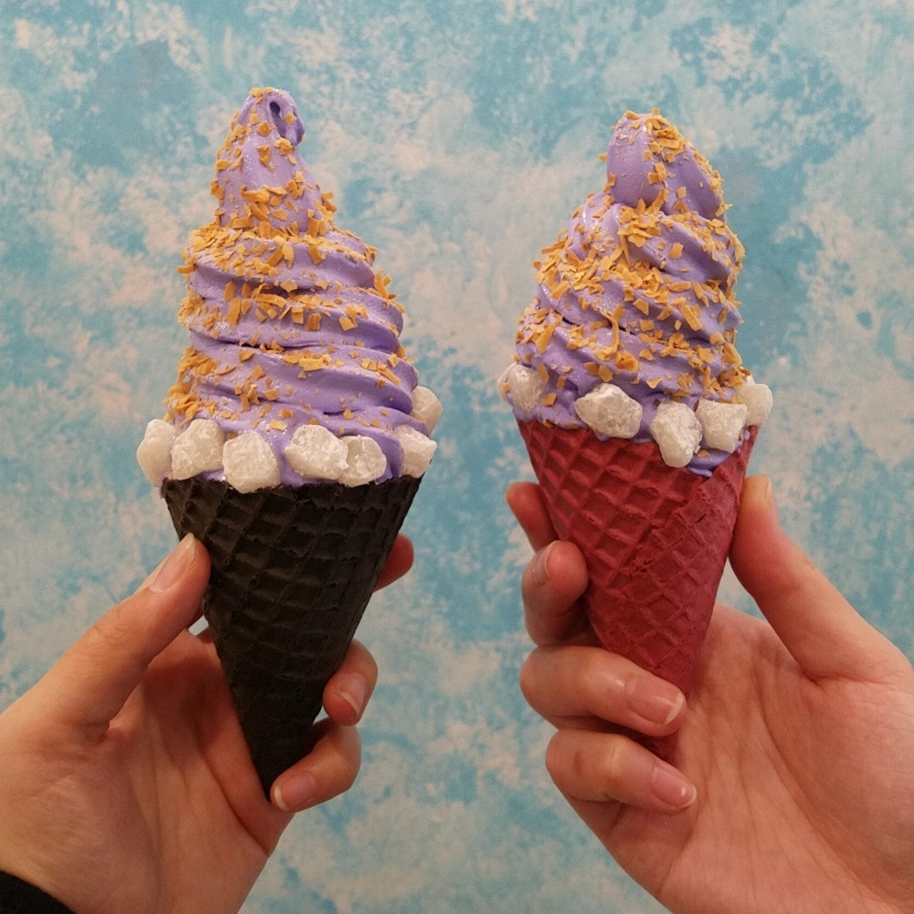
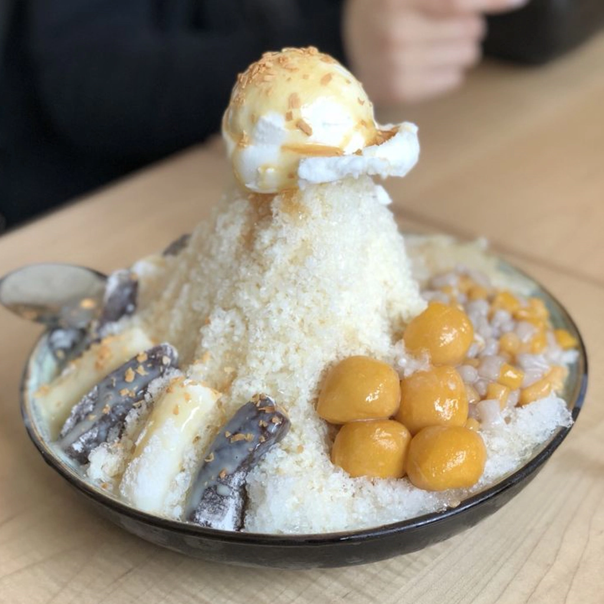
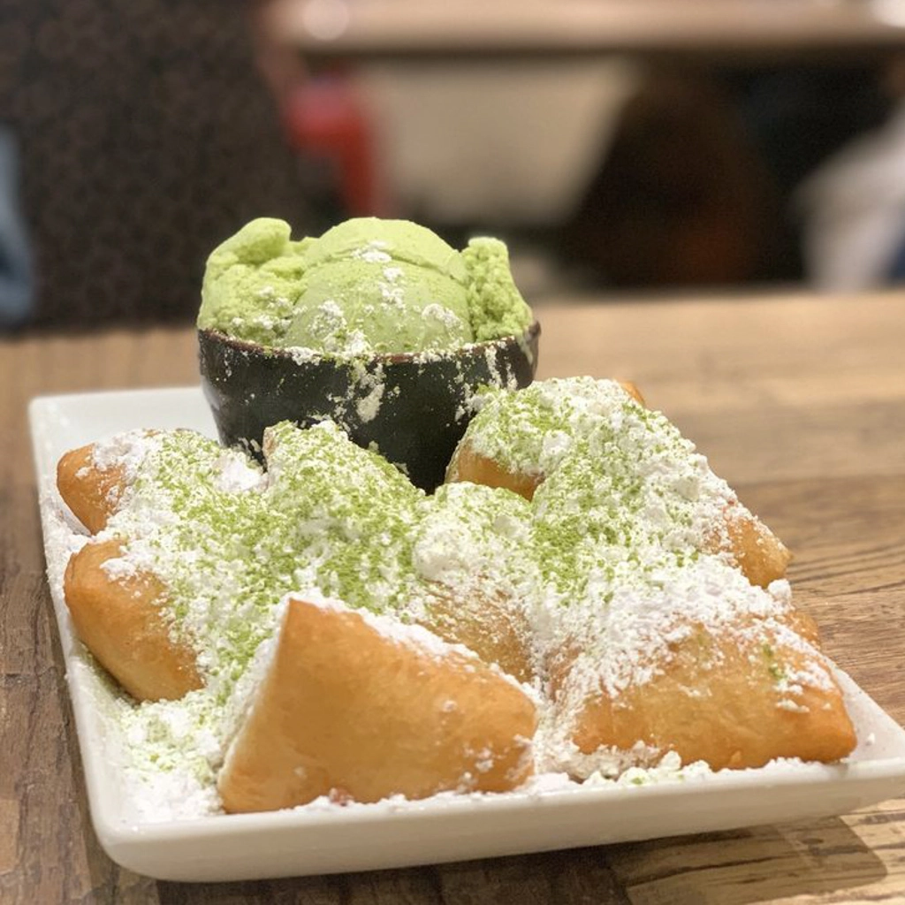
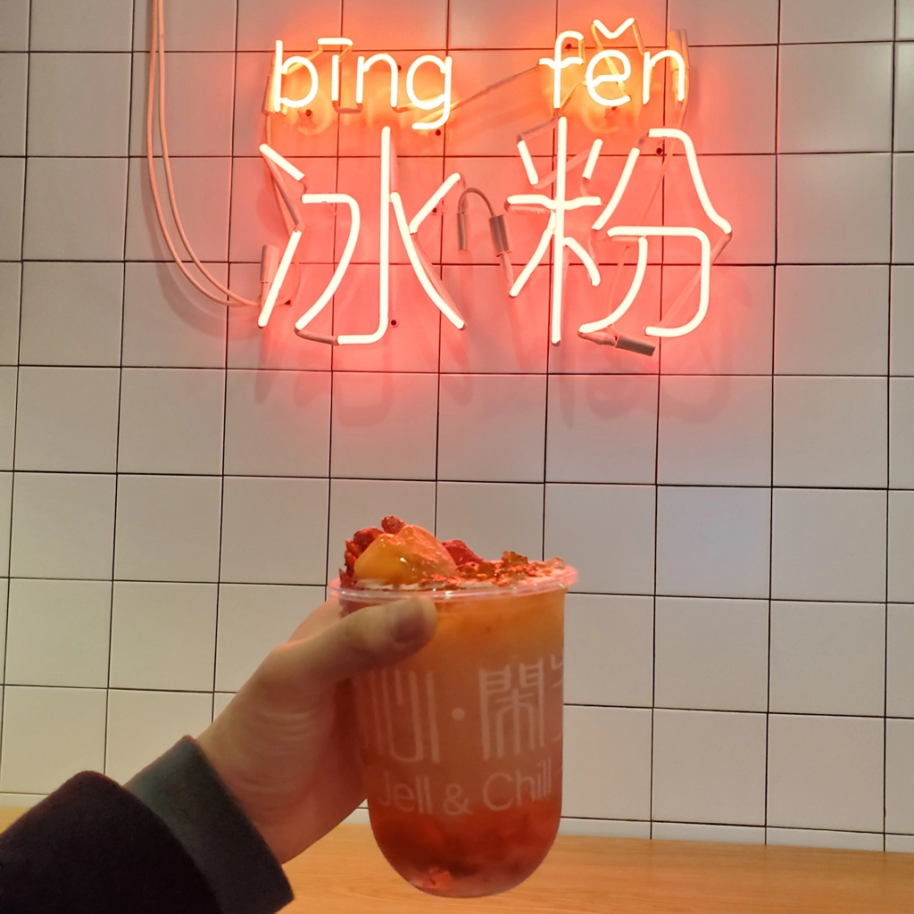
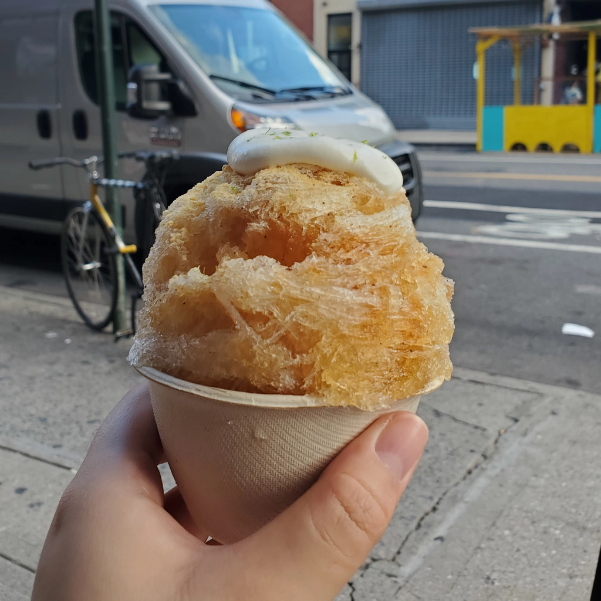

Best Asian Desserts in NYC
Jan 31 - Written by Bonnie and Emily
With the amount of baking that we do, you probably know that we both have a sweet tooth and soft spot for desserts! Its the perfect snack to wrap up a day full of delicious meals, and as Bonnie like to say there’s always room for dessert!
Although we are fans of desserts from all different cuisines, we also loved exploring the different asian desserts that are available around New York. Through the years we’ve come up with a list of some of our favorite sweet spots that we’ve spent afternoons and nights chatting while munching on delicious desserts.
Mango Mango - 23 St Marks Pl, New York
This was one of the first few places we discovered back when we were freshmen and it has been a favorite since. As we both love mango, its no surprise that we would love a place called Mango Mango where their entire menu is centered around this one fruit. Their dessert drinks are perfect if you’re ever on the go or just wanted a portable dessert to sip on while you stroll in the city. During those instances, we often go for our go-to drinks, the Mango Smoothie-o and the Mango Strawberry Smoothie-o. Now if you’re looking for something you can share with a friend or sit down and chat while eating, we’d suggest getting one of their desserts. We recommend trying the Special Mango Juice Sago & Pomelo with Ice Cream or the Snow White Juice with Mango and Black Rice. No matter what you choose to get, we guarantee you it’s bound to be delicious and refreshing. If you’re into fruity desserts, Mango Mango is the place for you.
Soft Swerve - 85B Allen St, New York, NY
Soft Swerve is by far the best place in NYC for soft serve ice cream and better yet, it's the best place to get ube flavored soft swerve. If you’ve never had ube before, it's a purple yam that is often used in pastries and desserts filled with delicious rich flavors. Soft Swerve provides you the option to create your own sundae that includes picking out up to two soft serve flavors and a variety of yummy toppings. They also have a premade sundae menu filled with various combinations that have been popular with customers! We often opt for one of their premade creations as you get more toppings for your money and yummy ice cream flavor combinations, but if none of the options sounds good to you, feel free to create your own. What we love about this place is that the ice cream is really creamy and can stand on its own — even without toppings, it’s delicious. Our favorite special to get is the Woodside which is their ube ice cream topped with toasted coconut and mochi. Definitely try their ube ice cream out when you get the change to head over to their store!
Meet Fresh - 37 Cooper Sq New York, NY
Meet Fresh, the best place for Taiwanese desserts and a place we frequently visited when we craved something sweet. They have a large selection of desserts and drinks to choose from which can be overwhelming to those unfamiliar with the menu. Meet Fresh’s menu accommodates for all seasons in the year with their warm and delicious hot desserts and their cold shaved ice dessert options! What's best about their menu is that there's the ability to customize the desserts with whatever toppings you would like -- their toppings selection is definitely one of the widest varieties we’ve seen yet! Emily’s go to desserts from here are their cold grass jellies, they’re all great so you can’t go wrong with whichever one you choose! Bonnie’s favorites are their grass jelly signatures, taro ball desserts, and their warm tofu pudding on a winter day! Meet Fresh is definitely the perfect place to go for the most variety and options all year round.
Grace Street - 17 W 32nd St New York, NY
Located in one of our most visited areas in the city, Koreatown, during our college years is Grace Street. Their abundant menu offers anything from drinks to hot and cold desserts. From their soft and fluffy beignets to their light and refreshing shaved snows. They also have a wide selection of drinks from coffee to milk tea to other specialty drinks. If you’re considering getting a shaved snow, you can’t go wrong with any of their specials but we often like to create our own with our favorite toppings to switch things up. We often like to go with something fruity, something chewy, and a condensed milk drizzle. Their cafe itself is also a wonderful place to hangout with friends and chit chat while eating or drinking one of their delicious menu items. Their menu is constantly being updated with new items that are trending or popular so it's definitely a place you’d want to check out often as there will always be something new to try.
Jell & Chill - 110 E 7th St, New York, NY
One of the up and coming popular dessert spots in the city, this was one of Bonnie’s favorite places to hit after dinner! Their menu is filled with jelly desserts, not to mention that are zero calories and delicious! Most of all, they also have special items that change every season that often incorporates fresh fruit of those months. Their jelly desserts often include a fruit based, plenty of jelly, and beautiful toppings including fresh fruit and edible flower petals. Not only is this spot yummy but also very instagram worthy, the owners take special care in crafting every jelly cup to be as pretty as shown in the pictures. Some of Bonnie’s favorites from their yearly menu include their signature jellies, Brown Sugar and Rosie, but one of her all time favorites is the Lychee Rose from their summer special menu. If you’re ever in the area and looking for a refreshing, aesthetic, and delicious dessert Jell and Chill is definitely the place for you!
The Little One - 150 E Broadway, New York, NY
This is the perfect summer spot to hit when you need something refreshing and delicious to beat the heat! The Little One has a small but yummy menu filled with popular ice cream sandwiches and Kakigori, japanese shaved ice. There are many versions of shaved ice in a lot of various cuisines and kakigori is one of the most delicious melt in the mouth types! The Little One includes a lot of Japanese flavored kakigoris including matcha and hojicha that are often topped with a flavorful dairy base like their lime zest whipped cream. Their desserts area delicious and unique and can be eaten on the go or while sitting in their adorable cafe seating with friends. The Little One is the best spot to hit in the summer season or even in the winter if you don’t mind the cold!